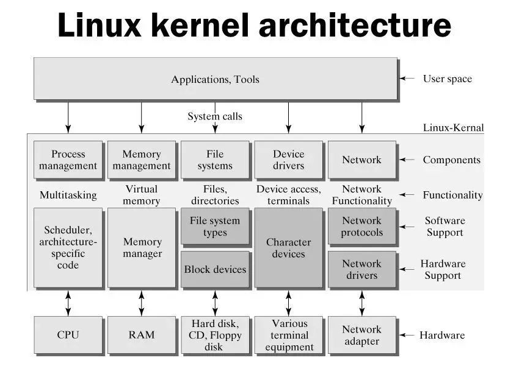

Linus Torvalds developed its first version of linux in 1991 as an OS for Intel 80386 microprocessor based computer. Linus did use Minix, a low-cost Unix created as a teaching aid, but he was discouraged by the inability to easily make and distribute changes to the system’s source code (because of Minix’s license). He decided to write his own operating system. Linus began by writing a simple terminal emulator, which he used to connect to larger Unix systems at his school. Use of Linux took off, with early Linux distributions quickly gaining many users. Linux quickly attracted many developers, hackers and others adding, changing and improving code. Because of the terms of its license, Linux easily evolved into a collaborative project developed by many developers, hackers and others.
Kernel is the core of the operating system that provides services like process management, memory management, device control, networking and others. It is the master of all the resources, so if user want access any resource, it need to ask the kernel for that resources. There are so many ways to do that. But most common methods are system call and ioctl call. We will see these two methods latter in one of the kernel session. Without kernel too, you can run an application from u-boot. But you will not have advantages of running multiple instances of application. There is no memory protection too. It means, your application may crash the system. It may happens if your application tries to access invalid memory or reserved/occupied memory. In kernel all those limitations are taken care.
